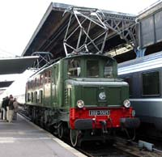
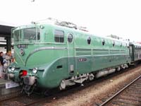
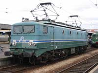
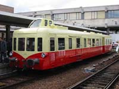
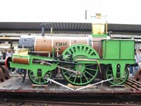
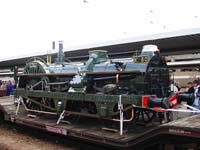

|
22 Septembre 2002 - Journées du Patrimoine 2002 Alors que le musée du Chemin de fer de Mulhouse fermait ses portes pour 3 années de travaux qui l'auront transformé en Cité du train, une partie de la collection était destinée à voyager et venir au contact du public. Les Journées du Patrimoine 2002 étaient la première occasion d'accueillir quelques locomotives à Paris, en prélude d'une opération de plus grande envergure qui se préparait en grand secret pour l'année suivante. Les CC 7102, BB 9004, Buddicom et Crampton étaient accompagnées de l'X 4039 de l'ABFC en exposition à Paris Bercy. Le train était en configuration d'acheminement. Les vapeurs étaient sur des wagons surbaissés et leurs cheminées démontées. Parallèlement, la 2D2 5525 stationnait à la gare d'Austerlitz. Le matériel de Mulhouse fut garé en Ile-de-France, attendant Train Capitale. |
|  |  |  |
|  |  |  |